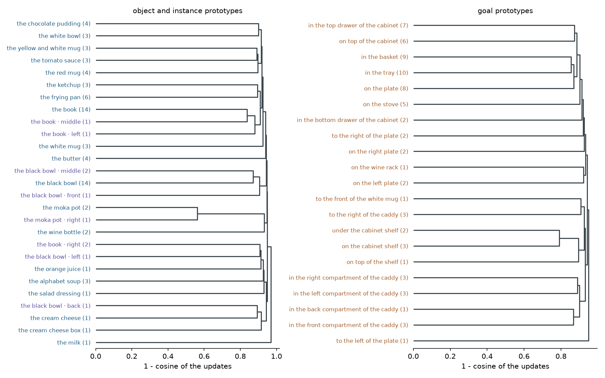
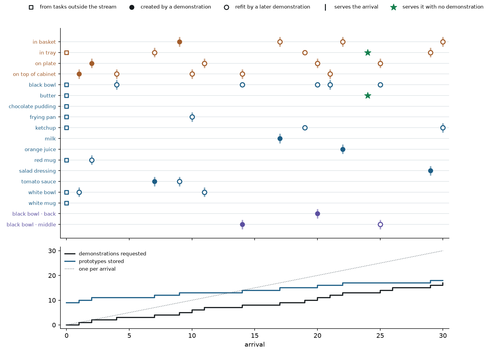

lifelong-ood-learner · working paper
Composing a frozen robot policy's own prototypes: one example in, new tasks out
Part I · the current program
In brief
A vision-language-action policy fine-tuned on forty tasks fails most new tasks in the same rooms. A new task arrives with its instruction, its scene and at most one demonstration. The frozen policy (pi0.5) takes it on by composing small prototypes learned from earlier tasks: an OBJECT prototype for the approach (how to reach and grasp this object, or the named instance of it) and a GOAL prototype for the carry (where to put it), each a rank-4 adapter consolidated over every demonstration of its concept. Practice decides between the composition and the policy alone, and the one demonstration is requested only when neither passes. This follows Wang et al.'s program (prototypes of a frozen generative model, selected and composed per out-of-distribution task) and adds what they lack: new primitives detected by practice, consolidated into concepts and reused.
On start states no design decision saw, the kept library succeeds 499 of 600 times against 273 for the policy alone, and 480 of 580 against 494 for a separate one-demonstration adapter per task with the same acceptance test (difference -0.024, 95% interval -0.074 to +0.024), storing 22 prototypes (102.9 MB) in place of 29 adapters (545.4 MB); non-inferiority at the pre-registered margin of 0.05 is not established. Learned as a stream, it asks for 17 and 16 demonstrations over 30 arrivals in two orders and damages no earlier arrival. A pre-registered replication on new tasks: 451 vs 151 zero-shot; vs LoRA + acc. +0.014, 95% interval -0.082 to +0.115; pooled with E3 -0.003, 95% interval -0.063 to +0.058.
The reads at a glance
Every read of the current program, in the order it ran; each links to its section, and each verdict is computed from its ledger row. The earlier program's reads are in Part II and, with every number, in docs/RESULTS.md.
Table 1. The reads at a glance.
| read | kind | result | ledger |
|---|---|---|---|
| D1 factored goal primitives | pre-registered | goal primitives: 343 vs 271 zero-shot; vs per-task LoRA + acc. 324 vs 454 (non-inferiority fails) | d1_factored |
| E0 object primitives (screen) | exploratory | library 201 vs zero-shot 137 of 300; LoRA 205 of 290 | e0_object |
| data defect: shared instructions | exploratory | 16 tasks had another scene's demonstration; fixed | l90_scenes |
| E1 factored library | pre-registered | object + goal library: 439 vs 272; vs LoRA + acc. 420 vs 478 (-0.100, 95% interval -0.193 to -0.010) | e1_factored |
| E2 instance children (screen) | exploratory | children 37 vs type 13 of 40; LoRA 35 | e2_instance |
| E3 hierarchical library | pre-registered | hierarchical library: 499 vs 273; vs LoRA + acc. 480 vs 494 (-0.024, 95% interval -0.074 to +0.024); 22 prototypes, 102.9 MB | e3_hier |
| i4 the factors in weight space | exploratory | object prototypes nearly orthogonal (cos 0.058); stable without one demo (cos 0.64) | i4_factors |
| E5 replication on 37 new tasks | pre-registered | 451 vs 151 zero-shot; vs LoRA + acc. +0.014, 95% interval -0.082 to +0.115; pooled with E3 -0.003, 95% interval -0.063 to +0.058 | e5_replicate |
| G0 recombination, held out | pre-registered | concepts from other tasks alone 365 vs 354 zero-shot (fails); with practice 484; vs monolithic same-data adapter 190 (passes) | g0_recombine |
| G2 adapter composition baselines | pre-registered | task arithmetic 71, averaging 328, composed concepts 345 | g2_baselines |
| G5a factor-level selection | pre-registered | per-factor choice 497 vs both-only 484 (n.s.); object alone 307, goal alone 378, policy 354 | g5_factors |
| G5b the switch at the grasp | pre-registered | gated 495 vs both always on 281 (sign p 6e-47); always on vs policy 273 | g5b_gating |
| i5 the library in weight space | exploratory | 48 prototypes; instance to own type cos 0.155 vs 0.053 | i5_library |
| G3 a second policy (SmolVLA) | pre-registered | 203 vs 20 zero-shot; vs LoRA + acc. -0.147, 95% interval -0.266 to -0.029 | g3_crossmodel |
| G3 a third policy (pi0) | pre-registered | 324 vs 85 zero-shot; vs LoRA + acc. -0.038, 95% interval -0.166 to +0.081 | g3_crossmodel |
| G7 against DSRL | pre-registered | vs DSRL on the frozen policy 499 vs 314; vs DSRL on the per-task LoRA -0.040, 95% interval -0.098 to +0.012 | g7_dsrl |
| G7b DSRL steering the library | pre-registered | vs DSRL on the LoRA -0.050, 95% interval -0.148 to +0.031; vs the library 493 vs 499: both fail | g7_dsrl |
| G6 against STRAP | pre-registered | 480 vs STRAP + acc. 296 of 580 | g6_strap |
| G4 Li's compositional OOD suites | pre-registered | kept 154 vs policy 157 of 400: fails (concepts the policy already holds) | g4_ood |
| G4b composing the policy's own fields | pre-registered | kept 174 vs policy 147 of 400 (sign p 1e-06): passes | g4_ood |
| G4c the policy's own fields on pi0 | pre-registered | kept 98 vs policy 35 of 400: passes | g4_ood |
| G4c the policy's own fields on SmolVLA | pre-registered | kept 25 vs policy 8 of 400: passes | g4_ood |
| i6 likelihood detects a new concept | exploratory | AUC 1.00: held at most 0.0082, new at least 0.026 | i6_novelty |
| U1 one learner, both kinds of task | exploratory | 50 arrivals: demos 17/16; served 641/672 vs 420 of 1000 | u1_joint |
| G5c prototype rank 8 / 16 | pre-registered | rank 16 vs LoRA + acc. -0.016, 95% interval -0.064 to +0.033; vs rank 4 504 vs 499 | g5c_rank |
| i7 the anatomy of a composed step | exploratory | named object first: object unit 44/50 vs policy 11 | i7_anatomy |
| G8 task leaves | pre-registered | 994 vs per-task LoRA + acc. 932 of 1320 (+0.047, 95% interval +0.008 to +0.091): superior | g8_leaves |
| G9 rank-matched per-task LoRA | pre-registered | library 480 vs rank-4 LoRA + acc. 480 of 580 (+0.000, 95% interval -0.050 to +0.052); 102.9 vs 135.7 MB | g9_rank4lora |
| G4d Li's prompt switching on our harness (pi0) | pre-registered | Li's sources 292 (fixed) / 305 (grasp); ours 86 / 74; policy 35 of 400 | g4_ood |
| G3 X-VLA (fourth policy) | pre-registered | 542 vs 534 zero-shot (n.s.); vs LoRA + acc. -0.031, 95% interval -0.076 to +0.009 | g3_crossmodel |
| G4c the policy's own fields on X-VLA | pre-registered | kept 120 vs policy 75 of 400: passes | g4_ood |
| G10 practice chooses the sources (pi0.5) | pre-registered | 269 vs Li's hand-chosen 222 of 400 (+0.117, 95% interval +0.022 to +0.240): better | g4_ood |
| G10 practice chooses the sources (pi0) | pre-registered | 292 vs Li's hand-chosen 305 of 400 (-0.033, 95% interval -0.138 to +0.030) | g4_ood |
| E4 stream, first rule | pre-registered | order a: 21 demos, served 481 vs 273, no damage holds; order b: 20 demos, served 436 vs 273, no damage not established | e4_stream |
| W1 stream, the thesis's rule | pre-registered | order a: 17 demos, served 465 vs 273, no damage holds; order b: 16 demos, served 496 vs 273, no damage holds | w1_stream |
| W2 stream with re-checks | pre-registered | order a: 18 demos, served 470 vs 273, no damage not established; order b: 16 demos, served 475 vs 273, no damage not established | w2_stream |
| W0 Wang et al.'s query selection | exploratory | right concept on top for 12 of 29 queries: fails | w0_select |
| T0 a new object without a demo | exploratory | borrowed prototypes help 2 of 17 failing tasks: fails | t0_transfer |
1The method
A step of an instruction is split at the policy's own grasp. Before the grasp the step's OBJECT prototype acts, keyed by the verb and the object (“put the black bowl”); when the instruction names an instance (“the middle black bowl”) its INSTANCE child acts instead. From the grasp to the release the GOAL prototype acts, keyed by the preposition and the target (“in the basket”). Each prototype is a rank-4 LoRA on the action expert, fitted by flow matching on the frames of its phase in every demonstration of its concept, each demonstration from the task's own scene. A missing factor is left to the policy. Ten practice episodes from stored start states decide between the composition and the policy (ties go to the policy). As a stream, an arrival requests its one demonstration only when neither reaches 8 of 10 in practice; the demonstration refits every concept on its path (instance, type, goal). Reads are pre-registered, scored on fresh start states from LIBERO's own sampler, paired by start state and noise, and tested with the exact sign test and a two-level bootstrap. The method is written out in docs/METHOD.md.
How the unit was factored
Each approach stored a different unit per task; the factorisation got finer as each measured failure pointed at the phase it lived in. Every row's numbers come from its pre-registered read (kept arms against the policy alone, then against the per-task LoRA with the same acceptance test, successes on fresh start states).
The library, and how it grows
The library is a small hierarchy of concepts. In weight space each prototype is its own direction; the dendrogram clusters the full library's prototypes by the cosine of their updates, labelled with the number of demonstrations each consolidates (exploratory).

What each unit does to the motion
Recorded end-effector and object trajectories (ten tasks, five start states each, exploratory) show the division of labour. The object unit decides which object is taken: the first grasp takes the named object in 44 of 50 episodes with the object unit alone and 47 with both units, against 11 for the policy alone and 12 with the goal unit alone. The transport separates the arms little: the policy already carries, and fails in the approach. Each instance child takes its own bowl; the type prototype mostly takes the back bowl whatever the instruction names.


A continual-learning walk-through
Tasks arrive one at a time (the W1 stream, order a). Each lane is a concept; a square is a concept the library held from tasks outside the stream, a filled circle a concept a demonstration created, a ring a concept a later demonstration refit, a tick an arrival the concept serves, a star an arrival served with no demonstration. Demonstrations and stored prototypes grow far slower than one per arrival.

Table 2. The first twelve arrivals of the W1 stream (order a): practice successes of 10 for the policy alone and for the composition from the library as it stood, the decision, and the practice after the refit.
| # | arrival | policy | composed | decision | after refit | kept |
|---|---|---|---|---|---|---|
| 1 | put the white bowl on top of the cabinet | 0 | 0 | demonstration; refits on top of cabinet, white bowl | 8 | library |
| 2 | put the red mug on the plate | 0 | 2 | demonstration; refits on plate, red mug | 6 | library |
| 3 | put the black bowl on the plate | 9 | 5 | the policy holds it | – | policy |
| 4 | put the black bowl on top of the cabinet | 0 | 1 | demonstration; refits on top of cabinet, black bowl | 9 | library |
| 5 | put the black bowl on the plate | 9 | 3 | the policy holds it | – | policy |
| 6 | put the black bowl on top of the cabinet | 10 | 0 | the policy holds it | – | policy |
| 7 | pick up the tomato sauce and put it in the tray | 1 | 2 | demonstration; refits in tray, tomato sauce | 5 | library |
| 8 | pick up the chocolate pudding and put it in the tray | 10 | 8 | the policy holds it | – | policy |
| 9 | pick up the tomato sauce and put it in the basket | 0 | 0 | demonstration; refits in basket, tomato sauce | 9 | library |
| 10 | put the frying pan on top of the cabinet | 0 | 4 | demonstration; refits on top of cabinet, frying pan | 1 | library |
| 11 | put the white bowl on the plate | 0 | 1 | demonstration; refits on plate, white bowl | 6 | library |
| 12 | pick up the tomato sauce and put it in the basket | 8 | 3 | the policy holds it | – | policy |
2Factored steps: object and goal prototypes
A step primitive fuses two factors: which object the arm reaches for, and where it carries it. Plan D splits each step at the policy's own grasp and gives the carry a GOAL primitive, keyed by the goal with the object left out. In a screen on 14 held-out tasks it succeeds 75 of 140 times against 59 zero-shot (exploratory). Pre-registered on the stream's 30 tasks (m3_prereg tag d1_factored), the acceptance test kept the policy on 19 tasks, the goal primitive on 7 and the goal primitive with binding on 4; the kept arms succeed 343 of 600 against 271 zero-shot, but against the per-task one-demo LoRA with acceptance only 324 of 580 against 454 (difference -0.224, 95% interval -0.350 to -0.107). The first grasp shows why: on the 6 tasks only the LoRA solves, the policy grasps the wrong object first in 114 of 120 episodes (the milk for the orange juice), and binding turns the arm toward the named object but grasps nothing in 59. The approach needs its own prototype.
Plan E gives the approach an OBJECT prototype, fitted only on frames before the first grasp and consolidated over every demonstration of that object; the stream's 30 tasks need 15 object and 4 goal prototypes. In a screen (exploratory) the composed library succeeds 201 of 300 times against 137 zero-shot, the per-task LoRA 205 of 290; on the 6 wrong-object tasks 39 of 60 (LoRA 42).
That screen exposed a data defect. The IPEC port of LIBERO-90 merges tasks by instruction (12 instructions shared by 28 tasks in different scenes), and every earlier read had taken an instruction's first episode as the task's demonstration: 16 tasks had another scene's demonstration, the per-task LoRA's included. Each task now takes its demonstration from its own scene's block, matched to its rendered first frames. Without the 9 affected stream tasks D1 keeps its verdicts.
Pre-registered on the corrected data (m3_prereg tag e1_factored), the acceptance test kept the library on 17 of 30 tasks; the kept arms succeed 439 of 600 against 272 zero-shot and 420 of 580 against 478 for the per-task LoRA with acceptance (difference -0.100, 95% interval -0.193 to -0.010). Most of the remaining gap sits on four tasks that name an instance of the black bowl.
3Instance children: a hierarchy of prototypes
A prototype pooled over 14 black bowls averages their approaches and does not pick the named one. Cobweb's hierarchy answers it: a type concept has instance children, and a step that names an instance uses the child, consolidated over the demonstrations with that object and that qualifier. In a screen the children succeed 37 of 40 times on the four instance tasks against 13 for the type prototype (exploratory). The confirmatory read (m3_prereg tag e3_hier) tested the hierarchical library, 22 prototypes for 30 tasks, on a second set of start states no design decision had seen: the kept arms succeed 499 of 600 times against 273 zero-shot (sign p 1.1e-60) and 480 of 580 against 494 for the per-task LoRA with acceptance (difference -0.024, 95% interval -0.074 to +0.024). The interval holds zero, but its lower bound misses the margin of 0.05, as the registration's power projection expected. Without acceptance the library and the LoRA are level (480 against 485); the instance children succeed 74 of 80 against 17 for the type prototype. The library stores 102.9 MB where the per-task LoRAs store 545.4 MB.
In weight space (exploratory) each object prototype points its own way: the mean cosine between object prototypes is 0.058, between object and goal prototypes 0.037. Both factors act in the same layers and modules, so they differ in direction, not in location. A prototype summarises its demonstrations: refit without one task's demonstration it keeps a cosine of 0.64 with the full one, against 0.057 with other objects' prototypes.
4Replication on new tasks
Pre-registered (m3_prereg tag e5_replicate) on the 37 single-step pick-and-place LIBERO-90 tasks outside the stream, none used by any design decision: the kept arms succeed 451 of 740 times against 151 zero-shot (sign p 2.8e-87); against the per-task LoRA with acceptance 451 against 441 (difference +0.014, 95% interval -0.082 to +0.115; non-inferiority is not established). Pooled with E3's tasks (66 tasks): difference -0.003, 95% interval -0.063 to +0.058; non-inferiority is not established.
5Does composition generalise?
The library above holds each task's own demonstration in its concepts. The decisive test of composition removes it (m3_prereg tag g0_recombine): the 67 single-step tasks are split into 5 folds, and every concept a fold needs is refit with no demonstration of that fold's tasks, so each of the 53 eligible tasks can be solved only by recombining an object and a goal learned from other tasks. Alone, the recombined concepts succeed 365 of 1060 times against 354 for the policy (sign p 0.56): the pre-registered test fails. With practice choosing between them and the policy, 484 (sign p 2.1e-32). The factorisation matters: a monolithic adapter trained on the same demonstrations succeeds 190 times, below the policy (sign p 3.1e-24 for the recombined concepts against it).
Table 3. Recombination of concepts learned only from other tasks, split by whether the policy alone succeeds on at least half of a task's 20 test episodes (exploratory, not pre-registered). Successes on fresh start states.
| held-out tasks where | policy alone | recombined concepts | monolithic adapter | better / worse tasks |
|---|---|---|---|---|
| the policy fails (33 tasks) | 25 | 145 | 48 | 14 / 2 |
| the policy succeeds (20 tasks) | 329 | 220 | 142 | 4 / 13 |
Recombination is a large gain exactly where the policy lacks the skill and interferes where it has it; the two cancel in the pooled test, and practice tells them apart.
Composing adapters the usual way does not do this (m3_prereg tag g2_baselines). On the same held-out tasks, the per-task adapters of an object donor and a goal donor, both always on: summed (task arithmetic) they succeed 71 times, averaged 328, against 345 for the recombined concepts; with practice choosing, 466 against 375 for the better baseline. Averaging is level with the recombined concepts without practice (sign p 0.33).
On a second policy (m3_prereg tag g3_crossmodel): the same concepts refit on SmolVLA, at the same tasks, start states and seed. SmolVLA alone succeeds 20 of 600 times; the kept library 203 (sign p 1.8e-52). Against SmolVLA's own per-task LoRA with acceptance, 189 against 274 of 580 (difference -0.147, 95% interval -0.266 to -0.029): the gain over the frozen policy carries over, the parity with a per-task adapter does not.
On a third flow-matching policy, pi0 (m3_prereg tag g3_crossmodel_pi0), pi0 alone succeeds 85 of 600 times and the kept library 324 (sign p 4.4e-60); against pi0's per-task LoRA with acceptance, 308 against 330 of 580 (difference -0.038, 95% interval -0.166 to +0.081). The scope is flow-matching and diffusion policies: a prototype is a low-rank change to the policy's velocity field, switched on for one phase.
Against DSRL (m3_prereg tag g7_dsrl), which trains a noise-space policy from 100 practice episodes per task: steering the frozen policy without a demonstration it reaches 314 of 600 with acceptance, against 499 for the library (difference +0.308, 95% interval +0.188 to +0.433); steering each task's one-demo LoRA it is the strongest arm run here, 503 of 580 against 480 (difference -0.040, 95% interval -0.098 to +0.012), at ten times the practice and a per-task adapter and actor.
Against STRAP (m3_prereg tag g6_strap), retrieving sub-trajectories from the library's own data and pi0.5's training data: 296 of 580 with acceptance, against 480 for the library (difference +0.317, 95% interval +0.200 to +0.440); STRAP alone falls below the policy.
Task leaves. The hierarchy gains a lowest level: a task the shared concepts cannot serve keeps its own one-demonstration adapter as a leaf, kept only where practice prefers it (m3_prereg tag g8_leaves, new start states). Over 66 tasks it succeeds 994 of 1320 times against 932 for the per-task LoRA with acceptance (difference +0.047, 95% interval +0.008 to +0.091): superior, with leaves on 24 tasks where the baseline keeps 48 adapters, 675.9 MB against 902.8 MB.
Where does the interference come from? Letting practice choose per factor (m3_prereg tag g5_factors) gives 497 against 484 for choosing only between the policy and both concepts (sign p 0.066, not significant). Alone, the object concept succeeds 307 times, below the policy's 354, and the goal concept 378: the object factor, which changes which object the arm reaches for, is the one that interferes when the policy already knows the task.
Does the switch at the grasp matter (m3_prereg tag g5b_gating)? With both prototypes on for the whole episode the library succeeds 281 of 600 times, level with the policy's 273 (sign p 0.61); switched at the policy's own grasp it succeeds 495 (discordant pairs 235 against 21). The same two prototypes, summed without the phase, give nothing: the gain is carried by the gating.
6The library learned as a stream
Learned as a stream, the library starts from the demonstrations of the LIBERO-90 tasks outside the stream, and the 30 tasks arrive one at a time in two orders, each composed from the current library; a demonstration, when requested, updates every concept on its path, as Cobweb updates every node an instance passes. Each task is served at the end by the final library where it kept the library (pre-registered, m3_prereg tags e4_stream, w1_stream, w2_stream).
Table 4. The library learned as a stream, per rule and order: demonstrations requested (of the 29 that exist); arrivals kept without one; served successes against zero-shot (of 600) and against the per-task LoRA with acceptance (of 580); on the arrivals whose composition changed after they arrived, the final composition against the arrival-time one. Fresh start states.
| rule | order | demos | no demo | vs zero-shot | vs LoRA + acc. | final / arrival |
|---|---|---|---|---|---|---|
| E4 | a | 21 | 8 | 481 / 273 | 462 / 494 | 289 / 263 |
| E4 | b | 20 | 9 | 436 / 273 | 417 / 494 | 209 / 225 |
| W1 | a | 17 | 13 | 465 / 273 | 446 / 494 | 213 / 198 |
| W1 | b | 16 | 14 | 496 / 273 | 477 / 494 | 205 / 201 |
| W2 | a | 18 | 12 | 470 / 273 | 451 / 494 | 202 / 197 |
| W2 | b | 16 | 14 | 475 / 273 | 456 / 494 | 184 / 190 |
E4 requests a demonstration whenever the composition does not beat the policy in practice. Both orders beat the policy by far (481 and 436 of 600 against 273), but in order b one arrival kept at 9 practice successes against the policy's 8 falls to 0 of 20 under the final library, and the losses sit on arrivals kept on a thin practice margin (2 against 1, 3 against 0). W1 uses the thesis's rule: no demonstration only when the better of the policy and the composition reaches 8 of 10. It asks for fewer demonstrations (17 and 16 against 21 and 20) and damages no earlier arrival in either order; in order b it comes within -0.029, 95% interval -0.081 to +0.019 of the per-task LoRA with acceptance. W2 adds a re-check after every refit (64 re-checks): it does not improve on W1, because ten practice episodes are too noisy a guard to tell a damaged unit from chance.
One learner, both kinds of task. A joint stream of 50 arrivals adds Li's 20 compositional OOD tasks, which have no demonstrations, to W1's 30 LIBERO-90 tasks; held concepts become pointers to the policy's own fields, new ones prototypes, and practice keeps what beats the policy (an exact replay: pointers carry no weights, so they change no request). It requests 17 and 16 demonstrations, all for LIBERO-90 concepts, and serves 641 and 672 of 1000 against 420 for the policy alone.

7What does not work
Selection by a query's likelihood. Wang et al. select a model's prototypes by how well they cover one query. Given a held-out demonstration as the query, neither the policy's flow-matching loss nor the error of each prototype's own samples picks the instruction's concept above chance (object concept on top for 12 of 29 queries; exploratory): one trajectory's motion varies more between placements than between concepts. The learner selects by the instruction's words and keeps by practice.
A new object without a demonstration. Sorting a new object under the known objects its name is closest to (the policy's own language features) and letting practice choose helps on 2 of the 17 tasks the policy fails (exploratory): object prototypes do not transfer between objects, and a new object needs its one example. Reuse comes from objects and goals that recur across tasks.
Concepts the policy already holds. On Li's compositional OOD suites (20 tasks, each pairing one training task's object with another's target; m3_prereg tag g4_ood), every concept was fitted on pi0.5's own training demonstrations. The kept arms succeed 154 of 400 times against 157 for the policy: the test fails. The prototypes learned nothing: their flow loss starts at 0.0024 and ends at 0.0038, where E3's fall from 0.06 to 0.0062. The library supplies a concept the policy lacks; it does not undo the policy's binding of names to the layouts it was trained on.
The remedy: compose the policy's own fields. A concept the policy already holds is its own field under the instruction of a training task that taught it; the step runs under the object concept's instruction until the grasp and the goal concept's after it, and practice chooses (m3_prereg tag g4b_field, a new set of start states). The kept arms succeed 174 of 400 times against 147 (discordant pairs 30 to 3; task-level difference +0.068, 95% interval +0.007 to +0.145), in both suites; the orange juice onto the stove 16 against 11, the cream cheese onto the plate 14 against 6, the bowl at table center onto the cabinet 15 against 4. Unfiltered the field composition gives 160: it helps where the source concepts are scene-matched, so practice must choose. It is score composition in the sense of our ICLR-2027 study, applied to a policy's phases.
The same composition, unchanged, on the two other flow-matching policies (m3_prereg tag g4c_field): pi0 98 against 35 of 400 (discordant pairs 63 to 0; Goal-OOD 66 against 10), SmolVLA 25 against 8. It carries across the three policies.
Against Li's prompt switching. The pointer operator is Li's, and it reproduces on our harness (m3_prereg tag g4d_li): with Li's hand-chosen source pairs pi0 succeeds 292 of 400 times at their fixed switching step and 305 at its own grasp, against 86 and 74 with our automatically chosen sources. The gap is the choice of sources, not the trigger: Li's pairs pick training tasks whose motion reaches where the new object lies, ours match the instruction's words.
Practice chooses the sources. With no hand labels, practice picks each held concept's source among 16 training instructions (m3_prereg tag g10_sources). On pi0.5 the chosen pairs succeed 269 of 400 times against 222 for Li's hand-chosen pairs (difference +0.117, 95% interval +0.022 to +0.240); on pi0 292 against 305 (difference -0.033, 95% interval -0.138 to +0.030), level with Li's fixed-step operator.
Which kind of unit a concept gets. The frozen policy's own flow-matching loss on a concept's frames separates the 34 concepts of its training tasks from the 40 LIBERO-90 concepts it never saw (AUC 1.00; held at most 0.0082, new at least 0.026; exploratory). This is the detector of new primitives Wang et al. lack: a held concept is a pointer to the policy's own field, a new one is fitted as a prototype. The same words are new in new scenes, so held means held under its instruction and scene. Caveat: held concepts are scored on demonstrations the policy was trained on.
The routing is right in both directions. On 20 LIBERO-90 tasks whose concepts share words with held ones, the field composition equals the policy (88 against 85 of 200; exploratory), while the prototypes the router assigns to these new concepts reach 173.
8Limitations
- Non-inferiority to a separate adapter per task is not established: on 30 tasks the tasks differ too much among themselves; the replication adds 37.
- A new object needs its one demonstration; the policy's language features do not find a known object to stand in.
- Ten practice episodes are a noisy guard: re-checking after every refit does not improve on the stream without it.
- Single-step pick-and-place only; two-step tasks and articulated objects (drawers, knobs) are not composed.
- Simulation only (LIBERO-90), one policy (pi0.5).
Verification
Every read quoted as a test was pre-registered in ledger/m3_prereg before its first episode (107 registrations: alloc, alloc_v2, b_bind_q1, b_bind_q2, b_bind_q2_amend1, b_scheme_main, baselines, baselines2, baselines_sota, baselines_sota_amend1, branch, branch_amend1, branch_amend2, branch_amend3, branch_amend4, c1_grammar, c2_stream, d1_factored, demo1, demo1_v2, demo1_v2_amend1, e1_factored, e3_hier, e4_stream, e5_replicate, f1_amend1, f1_amend2, f1_fresh, family, family2, g0_recombine, g10_sources, g2_baselines, g38, g3_crossmodel, g3_crossmodel_pi0, g3_crossmodel_xvla, g4_ood, g4b_field, g4c_field, g4c_field_xvla, g4d_li, g5_factors, g5b_gating, g5c_rank, g6_strap, g7_dsrl, g7b_dsrl_library, g8_leaves, g9_rank4lora, iterate, learn_from_practice, nft, nopolicy_control, p0, p1, p1_amend1, p2, p3a, p3b, p3c, p3c_amend1, p3c_reader, p3c_reader2, p4, p5_confirm, p5_scheme, p5_stream, p5_stream_amend1, p5_stream_amend2, p5_stream_amend3, p5_stream_amend4, p6, pi0_generality, pi0_generality_amend1, q10_main, q13_main, q16_library, q17_stream, q18_self, q20_confirm, q20_stream, q24_grammar, q26_grammar_accept, q27_joint, q28_amend1, q28_bindprim, q6_main, q7_tokpractice, q8_main, q_pilot, q_probes, reader_compress, seed1, shared_fold, v2, v2_synth, w1_stream, w2_stream, wave_a, yaw, zc_bind, zc_fold, zc_main, zc_pilot, zc_probe, zc_probe_amend1); reads marked exploratory were not. Episodes are paired by task, start state and noise; intervals come from a two-level bootstrap over tasks and episodes, tests from the exact sign test on discordant pairs, with Holm correction within a read. The full log of reads, each with its ledger tags, is docs/RESULTS.md; experiments/status.py shows what is running.
Part II · the earlier program
Summary of the earlier program
A vision-language-action policy fine-tuned on forty tasks fails almost every new task in the same rooms. We ask whether such a policy can take on tasks it has never seen, given only the task's instruction and scene and no demonstration, by recombining what it already holds. The policy generates every action, a few bytes are stored per task, and nothing it learned changes. In a familiar room pi0.5 carries out the room's trained routine whatever object the instruction names, so a new task usually differs from a task it performs only in which object fills a role. We code such a task as that task prototype plus a role map, about 40 bytes ("task 50 with the milk in the alphabet soup's role"), and supply the binding the policy cannot read from the word, either by giving the new object the prototype's object's appearance or by raising the action expert's attention on it. Where the scene's training contrasted object shapes, the role swap rebinds the routine (milk and orange juice picked up first in 9 and 10 of 10 episodes, against 1 and 0); where the routine is tied to a position, only the attention pointer redirects it. The policy's own successes, recorded with the real scene, then fold into an 18.4 KB key-value token with every weight frozen, after which the task's own instruction suffices. In the pre-registered read on start states nobody tuned on, practice found a form for 4 of the 14 tasks with a role code; there the tokens alone succeed 51 of 80 times against 21 for the frozen policy, with no demonstration and no simulator state at test. The tokens do not transfer to another room, and 10 of the 14 tasks stay out of reach. Allowing one demonstration, used once as a query and never executed, its first grasp marks a 4 KB object prototype in the policy's own image features, which points the attention with no simulator state at any step. A learner that keeps whichever of the policy alone, this binding and its folded token its own fresh practice validates then succeeds 97 of 180 times against 53 on nine tasks in a pre-registered read, storing 80 KB in all and leaving the policy unchanged where neither unit helps. Once an object type has a prototype, later tasks with that type need no demonstration: practice chooses among the stored prototypes, and the kept arm succeeds 76 of 160 times against 56 zero-shot, level with forms built from each task's own demonstration (75). Tokens shared across tasks bind the object more often but succeed less often. Where a step needs a motion the policy lacks, the demonstration may teach it as a reusable step: a primitive fitted on every other task that shares the step, kept only where the learner's practice favours it, raises 20 tasks from 71 to 108 successes of 400 in a pre-registered read with no demonstration of the scored task, including a goal no binding reached. In a stream of 30 tasks on never-used start states, these consolidated primitives beat joint, sequential and replay training of shared adapters and reach 93% of a separate one-demo adapter per task at a 29th of its storage; a separate adapter per task with the same acceptance test stays stronger. Factoring each step at the policy's own grasp into an OBJECT prototype and a GOAL prototype, each consolidated over every demonstration that shares it, with a child prototype when the instruction names an instance, closes most of that gap: on a second set of never-used start states the kept library succeeds 499 of 600 times against 273 zero-shot, and 480 of 580 against 494 for per-task adapters with the same acceptance test (difference -0.024, 95% interval -0.074 to +0.024), storing 22 prototypes in place of 29 adapters; non-inferiority at the pre-registered margin of 0.05 is not established.
Introduction
A trained robot policy already knows how to reach, grasp, carry and place. When it fails a new task in a familiar room, the missing piece is often small: which object, which receptacle, which side. The usual repair collects demonstrations of each new task and trains weights on them, a LoRA of 18.7 MB per task in our setting; a new task then needs a person to show it first. This report pursues a different repair, stated in the thesis: decompose a new task into what the policy already holds, store a code when that explains it, fold a small unit into the policy only where it does not, and keep generating every action from the policy itself.
Two papers shape the approach. Wang et al. discover the prototypes a frozen diffusion model holds by mode-finding and compose them for unseen combinations. The user's ICLR paper on caption coverage shows that a diffusion model can know each object and still fail a prompt that names several, because its captions rarely named them together; summing its single-object predictions restores the composition. We carry both ideas to a flow-matching robot policy, pi0.5 on LIBERO-90.
Thesis. A new task is a recombination of factors the policy already reads somewhere. Read the factors; compose the policy's own predictions when they explain the task; fold the smallest unit that makes a missing factor readable; consolidate. Cost then grows with the vocabulary of factors, not with the number of tasks, and the policy is never overwritten.
What this report contributes. (1) A diagnosis of why the policy fails new tasks: reading, not motor skill, for most of them (Section 2). (2) A benchmark that tests the thesis: tasks the policy has never seen, with no demonstration of them. (3) Role codes: a new task as a task prototype the policy performs with one object slot rebound, and two ways to inject the binding with the policy generating (Sections 3.3, 4.3). (4) Folding the policy's own successes into a token, with no demonstration (Section 4.4), and the scheme's pre-registered read on start states nobody tuned on (Section 4.5). (5) An acceptance test on the learner's own practice that keeps the policy, the binding or the token per task; in its pre-registered read no task does worse than the frozen policy (Section 4.5). (6) A library of 4 KB object prototypes that lets later tasks with a known object type skip the demonstration (Sections 4.5, 4.7). (7) Motion primitives per step, consolidated over the arrivals that share the step, which reach tasks binding cannot (Section 4.8).
Why the policy fails new tasks
2.1 Success follows what the training instructions named
We parse every task's goal into factors by rule: the moved object, the goal relation, the instruction's qualifiers (left, front, back) and the scene. Against pi0.5's forty training instructions, a simple rule separates its zero-shot successes on all 90 LIBERO-90 tasks: every factor named in this scene family (Figure 16). The strongest single predictor is whether training contrasted the object with another one in the same scene, so that the word had to be read.
2.2 In a familiar room, the policy runs the room's routine
To see what the policy reads, we asked it for each object in three living rooms and recorded which object it picked up first (the first object displaced more than 3 cm while its gripper is closed). In living room 1, trained only on put both the alphabet soup and the cream cheese box in the basket, it picks up the alphabet soup first in 10 of 10 episodes whichever object we name. Its zero-shot successes there are coincidences of that routine: asked for the cream cheese, it carries the alphabet soup and then the cream cheese, and the success check fires. In LIBERO-Object's own layouts, where it learned each object, an instruction naming another object present is followed 0.43 of the time.
| room | named | alphabet soup | cream cheese | butter | tomato sauce | ketchup | milk | orange juice | nothing | success |
|---|---|---|---|---|---|---|---|---|---|---|
| 1 | alphabet soup | 10 | 100% | |||||||
| 1 | cream cheese | 10 | 100% | |||||||
| 1 | ketchup | 10 | 0% | |||||||
| 1 | tomato sauce | 10 | 0% | |||||||
| 2 | alphabet soup | 10 | 100% | |||||||
| 2 | butter | 9 | 1 | 100% | ||||||
| 2 | milk | 8 | 1 | 1 | 0% | |||||
| 2 | orange juice | 9 | 1 | 0% | ||||||
| 2 | tomato sauce | 9 | 1 | 90% | ||||||
| 3 | alphabet soup | 10 | 100% | |||||||
| 3 | butter | 10 | 100% | |||||||
| 3 | cream cheese | 10 | 100% | |||||||
| 3 | ketchup | 9 | 1 | 0% | ||||||
| 3 | tomato sauce | 7 | 2 | 10% |
The same picture comes out of the ledger as a whole: the held-out tasks are the ones whose factors the instructions named only in other rooms, or never. Composition and folding below target exactly these two cases.
Method: read, compose, fold, consolidate
3.1 What the frozen policy holds
Prototypes. Mode-finding on the policy's action distribution over its training tasks gives a hierarchy of prototypes, with the noise level as depth. One observation's conditional is a single narrow bump, so the hierarchy lives across observations: its coarse prototypes are verbs (reach down, close, carry, lower, release), its top split is the gripper's state, and its labels change at a task's phase events. Task prototypes. Every task the policy performs is stored as its factors and its prototype chain, the sequence of verbs its actions pass through: 49 of them so far, the forty training tasks and the living-room tasks it solves.
3.2 Read: decompose the arrival into task prototypes
A new task is decomposed by a greedy cover of its factors with task prototypes, the selection step of Wang et al. moved from pixels to tasks. Each selected prototype supplies the factors it shares, and its chain says in which phase that factor acts. Factors no prototype covers are listed; they are where a fold will be needed.
Table 5. Two decompositions read from the task-prototype library (results/robot/task_library.json).
| new task | task prototype | factors it supplies |
|---|---|---|
| pick up the ketchup and put it in the tray | pick up the alphabet soup and put it in the tray | relation, scene |
| pick up the ketchup and place it in the basket | object | |
| put the butter at the back in the top drawer of the cabinet and close it | put both the cream cheese box and the butter in the basket | object |
| open the top drawer and put the bowl inside | relation | |
| pick up the book and place it in the back compartment of the caddy | qualifier | |
| not covered | relation: close top; scene: kitchen scene10 |
3.3 Compose: a task prototype with its object slot rebound
Most failures in a familiar room come from a task that differs from one the policy performs only in which object fills a role. The ROLE CODE of such a task names the performed task (the base: same scene, same goal with the moved object replaced) and the object pair. The policy runs the base's own conditional; composition must supply the binding of the base's object slot to the new object, which the policy cannot read from the word. Two injections bind it, and in both the policy produces every action:
- Role swap. The new object and the base's object exchange appearance in what the policy sees, while its own commanded gripper is open; the simulator's renderer exchanges their meshes (an oracle of what an image editor would do).
- Attention pointer. The action expert's attention to the image tokens over the new object is raised to a target mass at every layer and Euler step, while the gripper is open. Zero bias is the policy bit for bit.
Practice on a few start states decides which injection a task keeps. Prompt composition, summing the policy's velocities under several prompts by the rule that restores composition in image diffusion models, remains available: it amplifies a factor the policy reads faintly (Section 4.1).
3.4 Fold: from the policy's own attempts
The composed episodes that succeed are recorded with the REAL scene and relabelled with the task's own instruction; they fit a factor token, one key and one value per layer appended to the prompt's cache, with every policy weight frozen (18.4 KB). The token then practises alone and is refit on both rounds' successes. At test the policy receives only the instruction and the token: no injection and no simulator state. No demonstration enters at any point.
3.5 Consolidate
Tokens of one factor merge across arrivals; accrued tokens and any larger folds are distilled into one shared unit and deleted, trading bytes for drift on old tasks.
Prompt composition
Setup: pi0.5 (openpi's pi05_libero), frozen. 21 held-out LIBERO-90 tasks the policy fails, no demonstration of any of them,
20 scoring episodes per task at init states 30-49 that no method trained or practised on, the same states and noise
for every arm.
We ran composition on every LIBERO-90 task pi0.5 fails that has a readable base in its room with the same relation: 12 tasks. A pilot on practice states passed its pre-registered gate (14 of 70 at weight 8, against 4 for guidance on the instruction alone and 8 for a placebo pair of unrelated instructions), so the main read ran on the scoring states.
Table 6. The pre-registered composition read: 12 tasks, 20 episodes each, init states 30-49 (ledger p1_bindings, tag zc_main).
| composition | comparison | successes | lower bound | verdict | |
|---|---|---|---|---|---|
| H1 | weight 8 | zero-shot | 22 vs 9 of 240 | -0.004 | fails (needs > +0.05) |
| H1b | weight 8 | guidance on the instruction | 22 vs 19 | -0.050 | fails |
| H1c | weight 8 | placebo pair | 22 vs 9 | -0.008 | passes (Holm p 0.04) |
Composition is therefore real but narrow: it amplifies a factor the policy reads faintly, and cannot create one it does not read.
Where an unread object is
Binding needs to know where the named object is. We asked the policy's own vision-language backbone first: the attention from the object's words to the image tokens, layer by layer, scored by whether its peak token lies on the object (simulator segmentation). The pre-registered gate asked for 0.8 on LIBERO-Goal and 0.6 on the failing tasks; the best layer reaches 0.74 and 0.51, and an open-vocabulary detector (OWLv2) 0.65 and 0.71. The detector finds kitchen objects but never the alphabet soup. Both fail, so the reads below take where from the simulator's segmentation and renderer: an oracle, used during practice only for the token arm.
Binding a task prototype's slot
We first checked offline that the attention pointer acts: on the failing tasks it turns the policy's first chunk toward the biased object (contrast cosine 0.45 to 0.62). Online, on practice start states, we counted which object the policy picks up first.
Table 7. Episodes (of 10) in which the named object is the first picked up; practice states 0-9; oracle where (ledger b2_q2, tag b_q2mini; pre-registered).
| task | zero-shot | attention pointer | role swap |
|---|---|---|---|
| ketchup → basket (living room 1) | 0 | 7 | 0 |
| tomato sauce → basket (living room 1) | 0 | 0 | 0 |
| milk → basket (living room 2) | 1 | 7 | 9 |
| orange juice → basket (living room 2) | 0 | 3 | 10 |
The two injections bind in different scenes. Living room 2 was trained on two instructions over cans and boxes; its routine keys on shape, and giving the milk or the orange juice the soup can's appearance makes the policy pick them up. Showing the real object once it is held raises success to 0.7 and 0.7 (exploratory). An unnamed carton given the can's appearance is picked up too (1.0 and 0.8), an unnamed can is not: the routine follows shape, not label. Living room 1 was trained on one instruction; its routine goes to the soup's position whatever stands there, and only the attention pointer moves it to the ketchup. Biasing attention for whole episodes breaks grasping on most tasks (mean success 0.01); biasing it only during the approach puts the tomato sauce in the tray in 10 of 10 episodes (exploratory). Mugs that differ only in colour, and a frying pan in a moka pot's role, stay out of reach of both.
Folding the policy's own successes
The role episodes that succeeded on practice states 10-29 fit an 18.4 KB token per task. Given only its own instruction, the policy then picks up the orange juice first in 10 of 10 episodes and succeeds 0.6 of the time (zero-shot: 0, 0); the milk 5 of 10 and 0.2 (exploratory, practice states 0-9). The token reads a word the policy could not read before, learned from its own attempts.
The scheme on unseen start states
Fixed in advance: on practice states 0-9 each of the 14 tasks with a role code keeps the injection with the higher success (none if both stay below 0.2); that form practises on states 10-29, its successes fit a token, the token practises alone, and is refit on both rounds. Scoring uses states 30-49, which no step tuned on.
Table 8. The scheme's pre-registered read on init states 30-49 (ledger b5_scheme, tag main; m3_prereg tag b_scheme_main).
| comparison | successes | difference | sign test p | verdict | |
|---|---|---|---|---|---|
| H2 | composed form (oracle) vs zero-shot | 65 vs 21 of 80 | +0.55 | 1.3e-12 | passes |
| H1 | token alone vs zero-shot | 51 vs 21 of 80 | +0.38 | 2.3e-07 | passes |
| H4 | transferred token vs zero-shot | 0 vs 0 of 20 | +0.00 | 1 | fails |
Table 9. Successes of 20 on the tasks practice gave a form.
| task | zero-shot | composed form | token alone |
|---|---|---|---|
| pick up the milk and put it in the basket | 0 | 10 | 3 |
| pick up the orange juice and put it in the basket | 2 | 18 | 13 |
| pick up the tomato sauce and put it in the tray | 7 | 17 | 15 |
| pick up the black bowl on the left and put it in the tray | 12 | 20 | 20 |
The same procedure was then run on the tasks two broad screens found (48 more failing tasks, 10 practice episodes each), with the simulator's segmentation and, separately, with only the demonstration's object prototype as where.
Table 10. Every pre-registered read of the scheme. At test the policy gets the task's instruction and an 18.4 KB token, or, in the acceptance test, whichever of nothing, the 4 KB form and the token its own practice kept (ledger b5_scheme, q6_main, q8_main, q10_main, q13_main, q16_library).
| read | demonstration | where during practice | at test | successes vs zero-shot | Holm p | verdict |
|---|---|---|---|---|---|---|
| role codes, 4 tasks | no demonstration | simulator (practice only) | token | 51 vs 21 of 80 | 4.5e-07 | passes |
| demo prototype, 2 tasks | 1 demo as the query | the demo's object prototype | token | 10 vs 2 of 40 | 0.039 | passes |
| broad screen, 7 tasks | no demonstration | simulator (practice only) | token | 77 vs 56 of 140 | 0.013 | passes |
| demo prototype, 7 tasks | 1 demo as the query | the demo's object prototype | token | 65 vs 50 of 140 | 0.088 | fails |
| acceptance test, 9 tasks | 1 demo as the query | the demo's object prototype | what practice kept | 97 vs 53 of 180 | 3.9e-10 | passes |
| library, 8 tasks | no demonstration | other tasks' object prototypes | what practice kept | 76 vs 56 of 160 | 0.0012 | passes |
Fixed in advance (m3_prereg tag q13_main): before it is scored, the learner tries the policy alone, the binding form and the folded token 10 times each on init states 0-9, which no token was fitted on, and keeps the best (ties go to the policy, then the token). At a new noise seed the kept arm succeeds 97 of 180 times against 53 zero-shot; it loses only 4 paired episodes and wins 48 (task-level bootstrap +0.244, 95% interval 0.078 to 0.433). It keeps the policy on 3 tasks, the token on 4 and the form on 2: 81,920 bytes for 9 tasks. The token alone (74) and the form alone (82) also beat zero-shot at this seed, but their task-level intervals include zero: each fails on some task where the other, or the policy, does better. The rule was proposed after the q6 and q10 reads; the episodes, the noise and the acceptance states are new.
The library removes the demonstration (m3_prereg tag q16_library). A new task's candidate forms use object prototypes already stored from other tasks' demonstrations of the same object type, up to six, and the same acceptance test keeps one or the policy alone. On the 8 tasks with a stored prototype of their type, at a third noise seed, the kept arm succeeds 76 of 160 times against 56 zero-shot (discordant pairs 28 to 8; task-level bootstrap +0.125, 95% interval 0.006 to 0.256), level with the forms built from each task's own demonstration (75). Among three bowls, practice found prototypes of the right instance in tasks that moved it (the middle bowl: 15 against 10 zero-shot), and missed once (the front bowl: 3 against 13 with its own demonstration). The kept unit is an index into the library.
Prototype PoE planning, and where from one demonstration
Since 2026-10-02 one demonstration may serve as the query, used once to select experts and never executed. We ported Wang et al.'s test-time composition to the policy: the experts are the policy itself under its instruction, under other prompts and with its attention on one of 16 image blocks (scene options), and the motion prototypes the demonstration's chunks fall into; per gripper phase, Wang's greedy coverage selects three, and the prototypes multiply into one Gaussian that is mixed with the policy experts at every sampling step, the policy keeping a fixed minimum share.
Table 11. Prototype PoE planning (ledger q0_share, q1_options, q2_explain, q3_pilot; all pre-registered).
| probe | result |
|---|---|
| share of the policy | an early prototype weight still moves the output by 0.38 of the gap (the pre-registered limit was 0.2), so weights are constant over the steps; at weight 0.5 the chunk keeps 0.33 of the policy's sensitivity to the observation |
| options at one observation | none under the empty prompt; attention on an image block reaches 2.7 objects per frame |
| explaining a second demo | the code from demo 0 beats the policy alone on demo 1 in 21 of 21 tasks, but recomputing its options at demo 1's observations beats freezing them in only 10 |
| pilot, 6 tasks x 10 episodes | 3 successes of 60 against 1 zero-shot: the go rule fails |
A product of motion prototypes held over a whole gripper phase is an average motion: it says how the hand moves, never where. The demonstration does carry where: the gripper's position at its first grasp marks the object in its first frame, and the policy's own image features there are a 4 KB object prototype that finds the object in new start states 0.60 of the time. Binding the policy's attention to it (no simulator state) puts the white bowl on top of the cabinet in 8 of 10 practice episodes (zero-shot 0); in the pre-registered read the folded tokens alone succeed 10 of 40 times against 2 on the two tasks practice gave a form. A round of the demo token's own practice does not help (150 against 140 of 420; the one-demo LoRA 252).
Streams and other policies
Reuse is not yet shown (exploratory reads). A token folded on one arrival learns that task, not its object: the white-bowl tokens of task 43, loaded unchanged for the white-bowl tasks of other rooms, succeed 0 times in 80 episodes (ledger q11_reuse). One token fitted on the policy's own successes from three black-bowl tasks picks up the bowl first more often on four black-bowl tasks it never practised (58 of 80 against 48 zero-shot) but succeeds less (20 against 29). Cut at the grasp and loaded only while the gripper is open, it binds 54 and still succeeds 20; loaded throughout, 37 and 8 (ledger q12_joint). The loss arises during the approach itself, so placements copied from the source tasks do not explain it.
The 4 KB object prototype reuses where the token does not (exploratory, practice states). Where the moved object's type has one instance in the scene, a prototype from another task's demonstration, three of the six from other rooms, picks the object up first 44 of 60 times and succeeds 22 times; the task's own gives 46 and 24. In the kitchen with three black bowls a sibling task's prototype finds the named bowl 4 of 40 times. Figure 24 shows why: the prototype matches every bowl by type, and its best patches fall on the bowl at its source's place.

The stream (pre-registered, m3_prereg tag q17_stream). The 48 failing tasks with a moved object arrive one at a time, in a seeded order and its mirror. Only an arrival whose object type the library lacks asks for a demonstration (15 of 48 in either order, 61,440 bytes of prototypes); the rest choose among the library's prototypes of their type, and the acceptance test keeps a form or the policy. In the seeded order the kept arms succeed 116 of 960 times against 108 zero-shot (Holm p 0.096, not significant); in the mirror 123 (Holm p 0.00055). Each order keeps a form on 2 tasks; a demonstration for every task keeps 5 and succeeds 139 times (196,608 bytes). The library holds one prototype per type, and among three bowls it points at its own source's bowl: tasks naming the front or the middle bowl find no candidate that beats the policy. The library has to grow below the type.
Growing it from the learner's own successes, with no demonstration at all, fails (m3_prereg tag q18_self). Each of the same tasks practises zero-shot; a success yields a prototype from the policy's own grasp, the same construction as from a demonstration. 13 tasks get one, 4 keep a form, and the kept arms succeed 117 of 960 times against 110 (sign p 0.23). A prototype exists only where the policy already finds the object, and there binding mostly gets in its way; the tasks binding rescues never succeed zero-shot, so they offer nothing to learn from.
Practice can supply the instance instead (m3_prereg tag q20_stream). A type's prototype matches every object of the type (Figure 24); cut its map into its 4 strongest peaks, bind one peak per candidate, and let the acceptance test choose. The same stream, with the same 15 demonstrations, then passes in both orders: 125 and 131 of 960 against 113 zero-shot (Holm p 0.035 and 0.035; 3 and 5 forms kept). The front bowl, which no stored prototype pointed at, rises to 14 of 20 from 0 through another kitchen's prototype at its fourth peak. The gain sits in a few tasks, the task-level intervals include zero, and one kept form loses at test (the chocolate pudding), so ten practice episodes sometimes keep the wrong unit.
Table 12. Every form the stream with instances kept (ledger q20_stream), with its successes on init states 30-49. Each code is the task's instruction plus a pointer into the library; a prototype stored for another task costs the new task only its index.
| order | the kept code, read aloud | stored | kept (of 20) | zero-shot (of 20) |
|---|---|---|---|---|
| A | “put the black bowl at the front on the plate” + the black bowl prototype stored for task 17 (same room), instance 1 of 4, attention raised while the gripper is open | an index | 2 | 0 |
| A | “put the middle black bowl on the plate” + the black bowl prototype stored for task 17 (same room), instance 3 of 4, attention raised while the gripper is open | an index | 11 | 10 |
| A | “put the white bowl on top of the cabinet” + the white bowl prototype stored for task 37 (another room), instance 4 of 4, attention raised while the gripper is open | an index | 10 | 1 |
| B (mirror) | “put the black bowl at the back on the plate” + the black bowl prototype stored for task 30 (another room), instance 1 of 4, attention raised while the gripper is open | an index | 11 | 6 |
| B (mirror) | “put the black bowl at the front on the plate” + the black bowl prototype stored for task 30 (another room), instance 4 of 4, attention raised while the gripper is open | an index | 14 | 0 |
| B (mirror) | “put the middle black bowl on top of the cabinet” + the black bowl prototype stored for task 30 (another room), instance 2 of 4, attention raised while the gripper is open | an index | 1 | 1 |
| B (mirror) | “put the white bowl on top of the cabinet” + its own demonstration's white bowl prototype, attention raised while the gripper is open | 4 KB | 12 | 1 |
| B (mirror) | “put the chocolate pudding to the right of the plate” + the chocolate pudding prototype stored for task 69 (same room), instance 1 of 4, attention raised while the gripper is open | an index | 4 | 16 |
The kept codes hint at a grammar: practice kept the first peak for the back bowl and the last for the front bowl. Across all 15 LIBERO-90 tasks whose instruction picks one of several same-type objects by a word, the named object holds a fixed place among its siblings in the policy's own image: back the top row, front the bottom row, middle the middle row, left the rightmost column and right the leftmost (the camera faces the robot). Learned for each word from the other tasks that use it, the rule picks the named object in 150 of 150 held-out first frames (exploratory, simulator segmentation for the analysis). Applied to the peaks of another task's prototype it needs no instance search: the back bowl 10 of 10 with a prototype from another kitchen (zero-shot 4), the middle bowl 7 (zero-shot 5); but when a distractor (the plate) is among the peaks the middle one is the wrong object (2 of 10). The rule is exact; its input, the peaks, is not.
A type is what its exemplars share. Averaging the library's prototypes of a type from other tasks gives a type prototype whose peaks are more often the type's instances (the grammar's pick lands on the named object 0.66 of the time offline, against 0.59 from one donor), and how many peaks each word orders is learned from the other tasks that use it. In the pre-registered read (m3_prereg tag q24_grammar) on the 14 qualifier tasks, with no demonstration of the scored task, the named object is moved first 161 of 280 times against 92 zero-shot (discordant pairs 87 to 18, Holm p 9.9e-12); success is level (40 against 37). Five words and the library now pick the object. The pick-and-place tasks gain (the front bowl 6 against 0); the tasks with a second step bind and still fail at that step.
Filtered by the acceptance test (m3_prereg tag q26_grammar_accept), the grammar is kept on 4 tasks, all bowl tasks, and the policy elsewhere; the kept arms succeed 55 of 280 times against 37 (discordant pairs 23 to 5, Holm p 0.00091). A type prototype, five words and the learner's own practice turn better reading into more successes, with no demonstration of the scored task.
A confirmation round does not repair it (amendment q20_confirm): requiring a kept form to beat the policy again on init states 10-19 drops the back bowl's gain and keeps the pudding's form, which wins 4 to 3 there while the policy alone succeeds 16 of 20 times on the test states; neither order passes (123 and 126 against 113, Holm p 0.11). The pudding's practice states do not represent its test states.
Where composition stops. 13 of the stream's tasks also have the archived one-demo LoRA, an 18.7 MB adapter fitted on the task's demonstration: it succeeds 160 of 260 times there, the stream 13 and 15, zero-shot 4. On 10 of these the policy moves another object first, so binding is what fails, yet attention binding takes hold on only the white bowl; raising the attention mass to 0.95 still never moves the white bowl of the second kitchen or the frying pan first (0 and 0 of 10), and the butter, moved first 9 of 10 times at 0.85, never completes the task's second step. Composition reaches the tasks a frozen policy fails by reading the wrong object and could grasp; a grasp it lacks or a step it does not chain still needs what a fitted adapter takes from a demonstration.
Chaining by the instruction's grammar does not supply the missing step either (exploratory). Splitting the two-clause instructions at their conjunction and switching to the second clause at the policy's first release gives 3 successes alone and 1 with binding over 80 practice episodes, against 3 zero-shot; in recorded episodes the policy carries the bound butter toward its own base, never to the drawer. The first clause is itself not a task the policy performs, and a sequence can only chain clauses it does.
Reusable motion primitives
Binding cannot supply a motion the policy lacks, so the user allowed the one demonstration to teach a motion, as a reusable STEP rather than a task (docs/history/PLAN_PRIMITIVES.md). An instruction splits into steps at its conjunction; a step's key is its verb, preposition and target (“put | in | the top drawer of the cabinet”), the object left out. A primitive is a rank-16 LoRA on the action expert (18.7 MB) fitted on the step's segment of a demonstration with the step's clause as the prompt; the policy switches primitives at its own release. On the 13 pool tasks with an archived one-demo LoRA, a task's own step primitives succeed 78 of 130 times against 71 for the LoRA and 0 zero-shot (exploratory). Fitted on ONE other task's demo, a primitive does not transfer: 9 successes against 22 zero-shot over 13 pairs; it holds that object's grasp and room. Fitted on EVERY other task that shares the step, it does: “on top of the cabinet” gives 19 of 30 against 2 on three black-bowl tasks in kitchens it never saw, including the one whose routine puts the bowl in a drawer (9 of 10 against 0). Where the difficulty is which of three bowls, the pooled “on the plate” overrides the policy's reading (7 of 40 against 17). Consolidation across arrivals, Proposition 7's prediction, is what makes a step reusable.
Pre-registered (m3_prereg tag q27_joint): on the 20 pool tasks with a step shared by at least three other tasks, leave-one-task-out consolidated primitives kept by the acceptance test succeed 108 of 400 times against 71 zero-shot (Holm p 1.1e-07); unfiltered, 69 (Holm p 0.92). No demonstration of a scored task entered its primitives.
The stream (pre-registered, m3_prereg tag c2_stream): 30 single-step tasks in 4 step keys arrive one at a time; each tries its key's current primitive first and requests its demonstration only if the primitive is not kept, after which the key's primitive is refit on every demonstration so far. It requested 28 demonstrations and kept a primitive on 14 arrivals (2 with no demonstration of their own), storing 18.7 MB for all of them. The kept arms succeed 402 of 600 times against 269 zero-shot (Holm p 1.3e-31); each key's final primitive, run on all its arrivals, 326 (Holm p 0.00016), so refitting on later demonstrations keeps part of the earlier arrivals' gain. Reuse saved few demonstrations: a refit primitive rarely beat the policy on a new arrival before that arrival's own demonstration joined it.
Every stored LIBERO-90 start state had been used by some earlier read, so the pre-registered fresh-state benchmark (m3_prereg tag f1_fresh) draws 20 new start states per task from LIBERO's own placement sampler. On the 20 tasks above, the kept arms succeed 120 of 400 times against 70 zero-shot (discordant pairs 52 to 2). The per-task one-demo LoRA, fitted on each scored task's own demonstration, succeeds 291 times: with no demonstration of the scored task the scheme reaches about two fifths of it. A per-task adapter damages nothing either, so the scheme's case is a frontier: success per demonstration requested and per byte stored, which the stream measures.
Against its baselines, on start states no rule has seen (pre-registered, m3_prereg tags f1_fresh and f1_amend1), the stream is the best of the learners that share storage across tasks, and reaches 93% of a separate adapter per task at a 29th of its storage (Figure 25). Sequential fine-tuning forgets; a separate adapter per task given the same acceptance test remains the strongest. Given the same acceptance test, one adapter per step key trained on all its demonstrations reaches 400, and the stream's lead over it is not significant (sign p 0.059): most of the gain over shared-storage baselines is the acceptance test; the stream adds a quarter of the storage and fewer demonstrations.
A primitive need not be large: refit at rank 4 (4.7 MB) the three cabinet primitives succeed 19 of 30 times, as at rank 16 (18.7 MB); confined to the expert's last two layers (0.3 MB) they fail (2). One rank-4 primitive per step, shared by every task with that step, against an 18.7 MB adapter per task (exploratory).
What the prototypes and primitives encode
A prototype is an object type at a place. Over the library's 62 prototypes, three factors explain 35% of the variance in their pairwise similarity: the type 14% on its own, the place in the image 11%, the room 1% (exploratory). Their hierarchy (Figure 26) groups the books of three study rooms, the frying pans and the bottles, and puts two objects grasped at the same patch side by side. That is why a borrowed prototype transfers across rooms when its type is alone and points at its own source's instance when it is not.

A consolidated primitive encodes its step. Primitives of one step key have cosine 0.52 with each other and 0.086 with other keys' (Figure 27), and a key's successive refits in the stream agree more as demonstrations accumulate. The update lives in the action expert's queries (0.17 of its squared norm) and MLP (0.50), almost not in its keys and values: a primitive changes what the action tokens look at and how they transform it. What it does to the actions matches the reads: the cabinet primitive changes the height of the carry (0.36) and acts twice as much on its own step's frames (0.20 against 0.10); the plate primitive acts on the approach, where the policy chooses the bowl, and no more on its own step's frames than on others (0.107 against 0.105), which is the instance gap left against per-task adapters.

The interpretation points at a repair: a primitive trained without binding moves the approach on its own, so binding added at test breaks it. Refit with binding on during training, the plate primitives and binding compose: 15 of 40 practice episodes against 6 for the earlier primitives with binding added, the back bowl 9 of 10 against 4 zero-shot (exploratory); on two of the four tasks the policy alone remains better (17 zero-shot in all).
Pre-registered on the 16 plate and basket tasks, on fresh start states (m3_prereg tags q28_bindprim and q28_amend1; a first run was void because six tasks had no stored prototype): primitives trained under binding and run with it succeed 119 of 320 times against 82 for the plain ones (Holm p 0.00018), so attention and adapter compose. Both stay below the policy on these keys (144 zero-shot), and the kept arms reach 152 (Holm p 0.077, not significant): where the policy already chooses the object well, a primitive pooled over other objects rarely improves on it.
Limitations of the earlier program
- Where the named object is comes from the simulator's segmentation during practice, or from the one demonstration's object prototype: the policy's own grounding and an open-vocabulary detector both fall short of the pre-registered gate. At test only the instruction and the kept unit remain.
- Coverage: approach-only binding gives a form on 9 of the 48 failing tasks with a moved object; on the rest the policy fails for reasons binding does not reach.
- Reuse across arrivals is not yet shown: shared tokens bind more often and succeed less often.
- A role swap binds only where the scene's routine keys on appearance (here, shape); a routine tied to a position needs the attention pointer, and objects that differ only in colour, or whose grasps differ, stay out of reach.
- Role codes need a base: a task the policy performs in the same scene with the same goal up to the moved object. 14 of the 71 failing LIBERO-90 tasks have one.
- Simulation only (LIBERO-90), one policy so far (pi0.5).
One pre-registered probe failed its own validity gate and is not used: the policy's first chunk points at the named object only 0.43 of the time even in LIBERO-Goal.